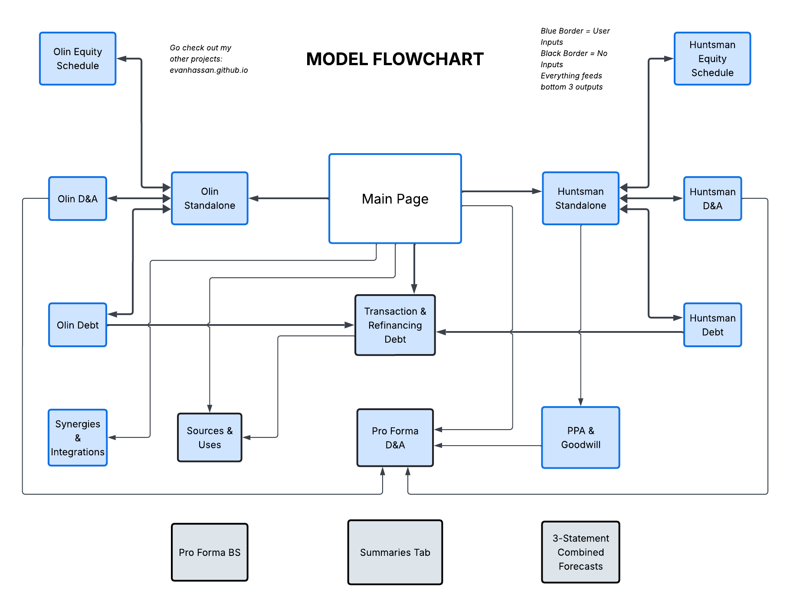
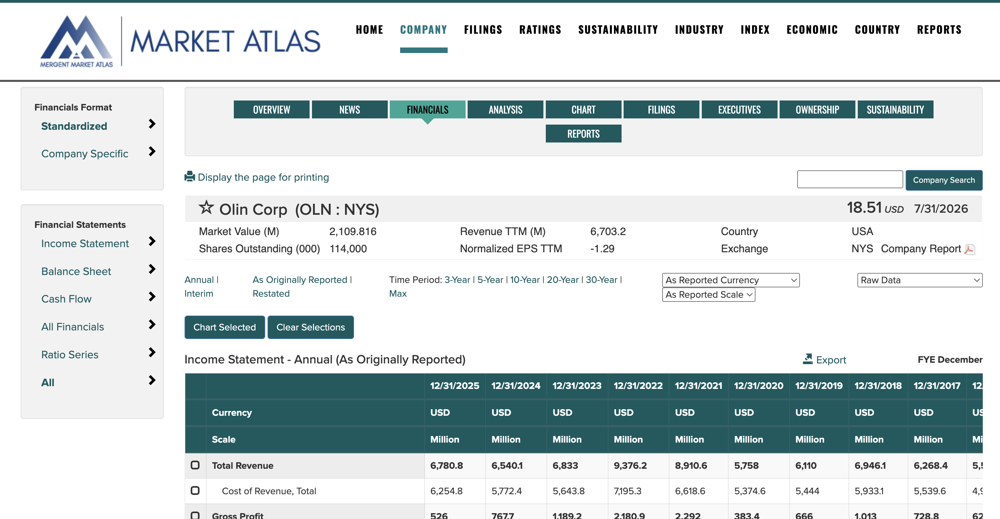
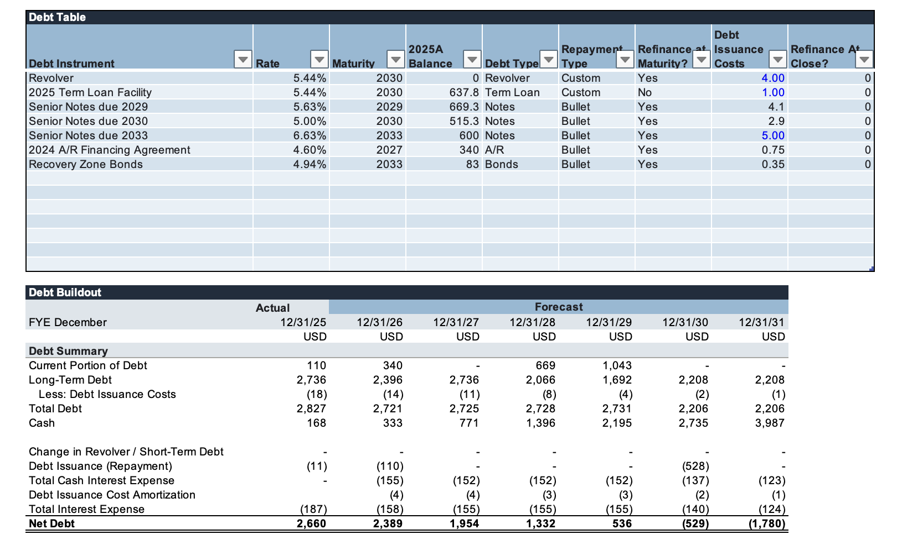
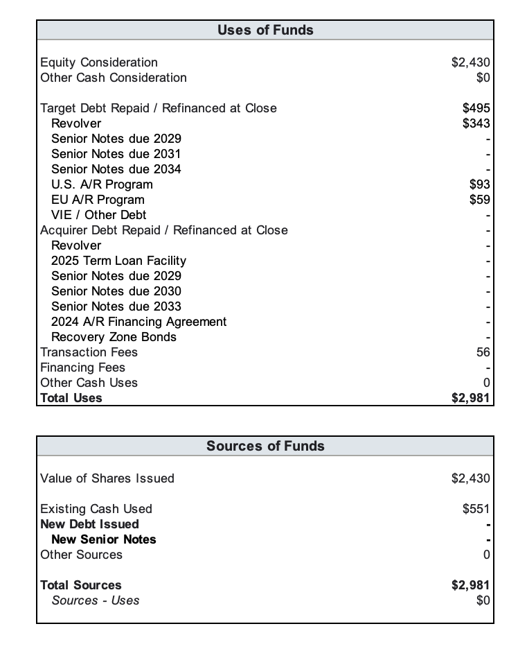
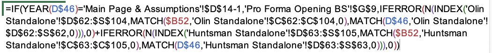
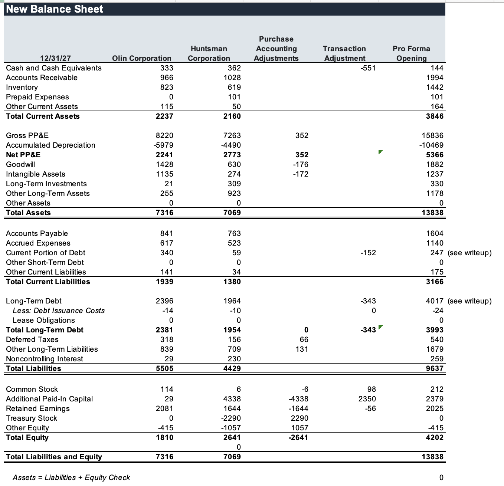
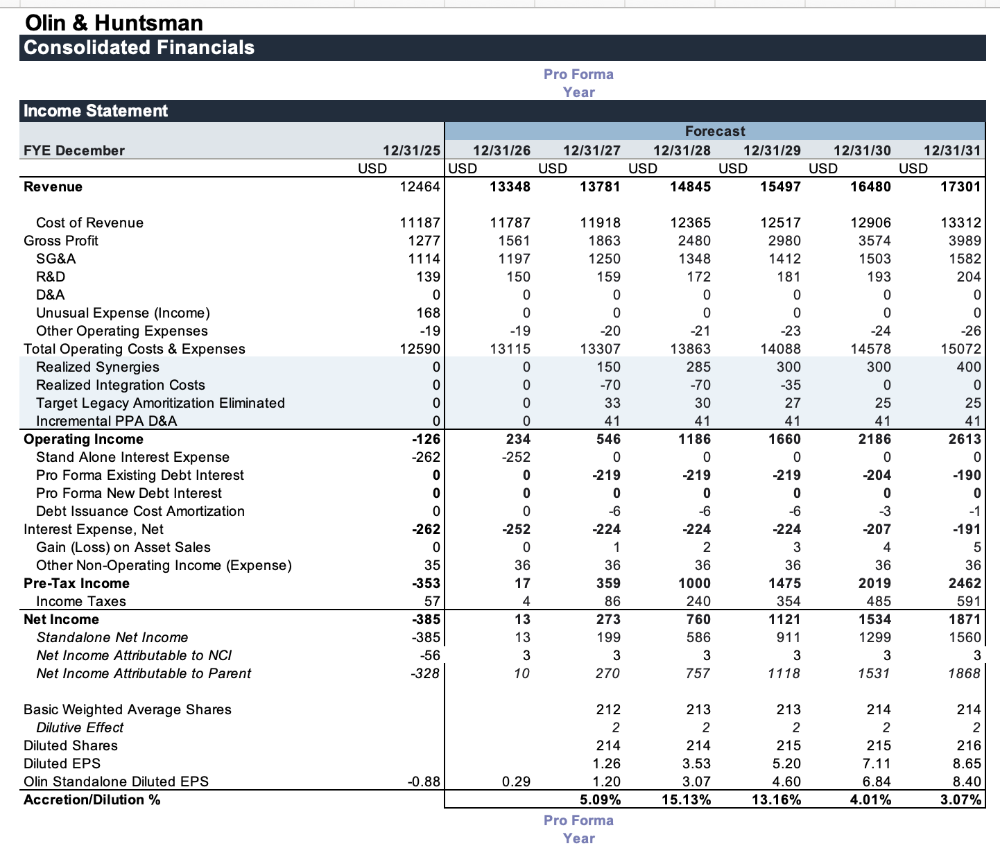
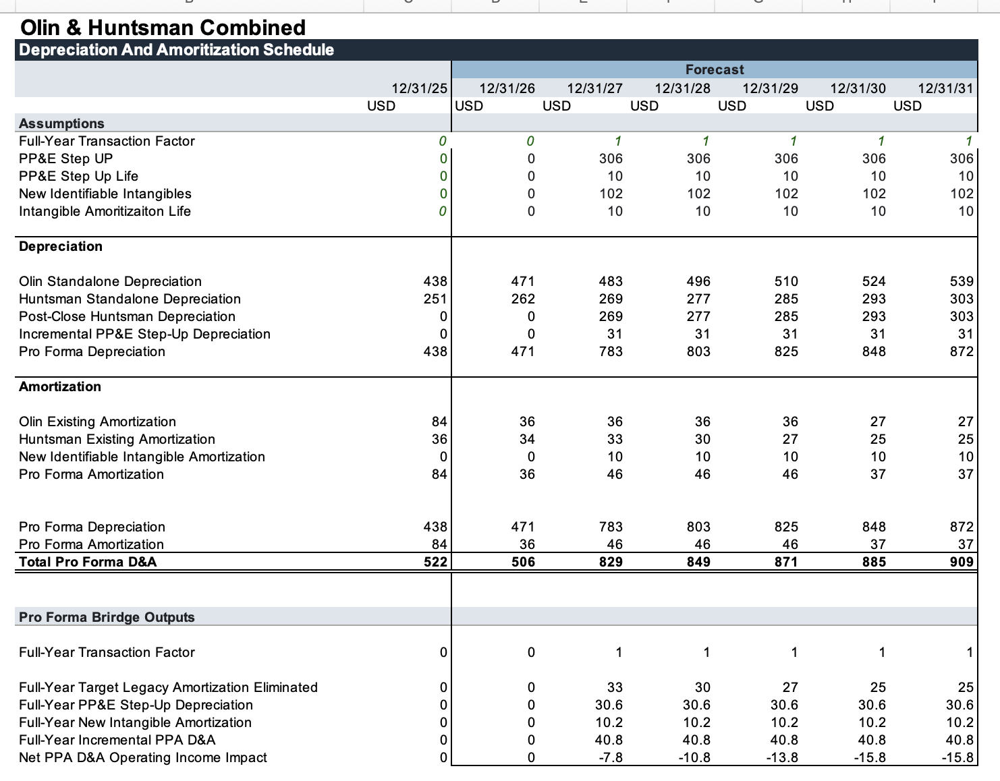
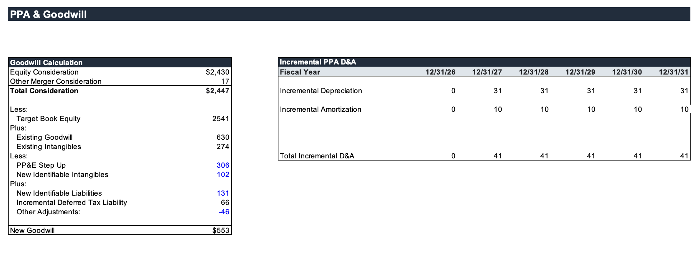
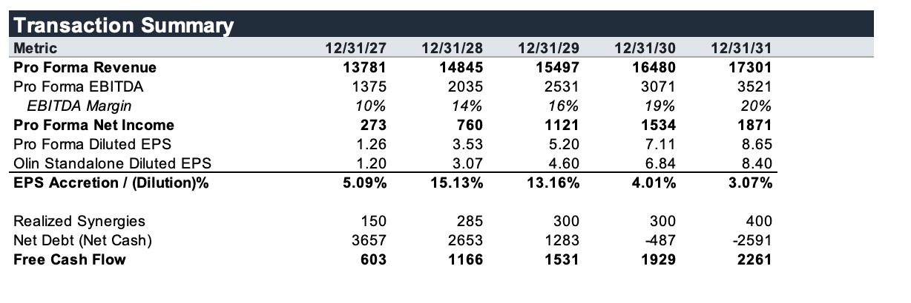

Modeling the Merger between Olin and Huntsman
In June 2026, chemical giants Olin Corporation and Huntsman Corporation announced a massive $12.5 billion all-stock merger. Olin operates more upstream in basic chemicals and industrial materials, while Huntsman is more downstream in specialty chemicals and advanced formulations. The ownership split is 54.5% Olin and 45.5% Huntsman, and management outlined more than $400 million of cost synergies and raw-material integration benefits.
This transaction interested me because of how much information was actually disclosed. Both companies are public, which meant I could build something much more thorough than a quick headline reaction. I ended up creating a full merger model with standalone three-statement forecasts for both companies, D&A, debt, and equity schedules, a pro forma opening balance sheet, synergies, consolidated financial statements, PPA & goodwill, a transaction & refinancing debt tab, and a summary tab at the end. This builds on models I had made before, but it also forced me to learn a few things I had never modeled in this much depth.
It is highly recommended that you download this spreadsheet, as it showcases my full analyst ability.
Part of the reason I made the spreadsheet so extensive is that I want to use it as a template going forward. This particular spreadsheet took me nearly as long as the other projects combined. It was fun.

I’m going to partition this writeup into sections because, frankly, it became a leviathan. Most sections are broken into data, build, and results so it is easier to see what I found, what I did with it, and what actually came out of the model.
Standalone Schedules
Data
I’ve become all too familiar with Mergent Market Data, because it is the best financial-data resource readily available to me through the University of Utah library. I’m glad they standardize statements, because it makes Excel Index & Match templates much easier to use. That said, there were some real nuances I had to deal with:
- Mergent’s D&A is baked into COGS, which makes standalone D&A schedules harder to project. Simply taking Normalized EBITDA less EBIT and adding that back into cash flow from operations is not enough to fully back into the historical amount, so I chose not to force a residual forecast that was not consequential.
- Mergent’s long-term debt presentation is not split cleanly into gross debt and interest-expense drivers. That becomes a problem when trying to avoid overstating forecast debt and when cleaning up the cash-flow statement.
- Mergent’s change in operating net working capital is not just (current assets - cash) - (current liabilities - short-term debt). They reconcile other cash movements that I cannot realistically forecast, so for projected years I use a more standard ONWC formulation that still tracks historical behavior well enough.

Build
With all of that out of the way, I kept most assumptions fairly constant but leaned on management guidance for revenue growth and margin direction at both companies. Some of those margin improvements looked aggressive, so I shaved a few points off rather than just copying management’s case. D&A, debt, and equity are all plugged from their own schedules. The last thing worth noting is that most balance-sheet accounts do not directly drive individual expense lines in my model. I forecast the movements, reflect the cash impact in the cash flow statement, and let that roll through to cash and the balance sheet. A good example is Other Assets and Other Liabilities: because those balances were nontrivial, I projected them as a percent of revenue and then reconciled the related cash-flow impact through a dedicated line item.
I’m not going to include screenshots of every workbook component in this writeup, but here are a few of the Olin schedules I thought were worth showing. One thing that surprised me was just how massive D&A is for these businesses. I did not expect chemical companies to depreciate this heavily, but then again gross PP&E is enormous. In many years, D&A is the difference between positive and negative FCF. Gross PP&E also climbed faster than revenue, which initially felt backward to me until I spent more time thinking about capital intensity in chemical manufacturing.
The balance sheet is mostly standard, except for the debt-issuance-cost amortization row, which I added because those costs were grouped historically into long-term debt and still need to be reconciled through interest expense and cash flow. One broad shortcoming of the model is that change in working capital is not exactly equivalent to the way Mergent presents it. That may be common practice, but I thought it was worth flagging because it affects how tightly the historical bridge works.
Results
Using assumptions anchored to management expectations but toned down where necessary, both standalone companies still look financially healthy. 2023 stands out as a rough year for the chemical industry, but the forecasts point to stronger cash flow and still-manageable balance sheets. D&A remains a massive drag, yet projected margin improvement more than offsets it in the base case.
Debt Schedules
Data
After working through each company’s 10-K, I was able to identify the key debt instruments for both Olin and Huntsman. That part was fairly straightforward. The more annoying part was debt issuance costs. I had to move through footnotes, appendices, prospectuses, and original debt announcements to pin them down. The main exception was Olin’s revolver, 2025 term loan facility, and 2023 senior notes, where I could only get to a combined $10 million figure. I then assigned realistic values across those tranches that still sum to the disclosed total, which is why there are blue inputs on that schedule.
Build
I did all of the debt math using a VBA macro. Full disclosure: I vibecoded this in Claude because it was cleaner and made the schedule easier to extend. If a new tranche needs to be added, I can plug in the instrument, fill the fields or use the custom table for extra logic, and rebuild it. Because the deal closes in 2027, it is not crazy to think one or both companies could incur additional debt before close. Inputs include minimum cash balance, base rates, spreads, revolver capacity, and switches that determine whether the revolver acts as a cash plug. The output is net debt, interest expense, debt-issuance-cost amortization, and principal repayment.

Results
For both companies, I assume most senior-note tranches are refinanced. I also assume A/R refinancing and bullet refinancing happen on the same terms. Huntsman still carries debt further out in the model, while Olin becomes net-cash positive by 2031. I am not fully convinced that is the most realistic long-run outcome, because the model only includes debt currently outstanding and does not assume incremental issuance beyond what is necessary to support the transaction.
Two Olin tranches in particular stood out. The first was the Recovery Zone bonds, which are tax-exempt bonds issued for qualifying plant investments and therefore carry unusually attractive rates. They felt like a cheat code the first time I read about them. The second was the 2025 term loan that prices like the revolver. That confused me at first, because it would seem easier to just draw the revolver, but the revolver comes with more restrictions and is worth preserving as liquidity in a cyclical business.
Equity Schedules
Data
Huntsman’s 10-K discusses stock-based compensation, so I incorporated dilution rather than holding share count flat. I used historical diluted-share movement and compensation-related dilution as the anchor for the forecast. For Olin, I kept dilution more restrained based on its recent share-count behavior and capital-allocation history. In other words, I did not want to force a dramatic issuance assumption where the filings did not justify one, but I also did not want to pretend these companies exist in a frozen-share-count world.
Build
The most confusing part is the share toggles at the bottom. These determine how repurchases or issuance affect common stock. If the positive-share toggle is on, new shares do not flow through cash, which is helpful for stock-based comp and treasury-share reissuance. The buyback or issuance amount is driven by the stock issuance / repurchases line in the cash flow statement. The negative-share toggle determines whether repurchased shares sit in treasury stock or are retired. The rest of the build is a pretty standard equity schedule, so I will spare you a longer explanation.
Results
Total equity generally increases through the forecast for both companies. That said, this is still contingent on management not deploying additional cash more aggressively elsewhere. Since I assume many debt tranches are refinanced, any extra deleveraging would have to come from a different cash use decision.
D&A Schedules
Data / Build
I’m consolidating data and build here because, in this case, the historical data pretty much explains the schedule logic. Of everything in the model, these two schedules affect the standalones the most. I start with Normalized EBITDA less Normalized EBIT to derive total D&A, use change in intangibles to estimate amortization, and back into depreciation from there. Because CapEx plus gross PP&E does not cleanly reconcile to net PP&E, I added a PP&E FX plug, and I did something similar for accumulated depreciation to capture disposals or other noise.
My least favorite thing about this model is how sensitive everything becomes to depreciation. A small tweak can move results more than I want. Because of that, I used an implied-depreciation memo row in assumptions so I could keep the rate grounded in recent history rather than just throwing in a round number. I landed at 5.8%, which is above the prior year but still optimistic enough to reflect management’s growth case.
Results
D&A increases steadily for both companies, which makes sense given the growth profile. The more interesting difference is PP&E behavior. In Olin’s case, net PP&E keeps drifting down as depreciation outweighs capital expenditures. Huntsman’s PP&E climbs, which fits with a business mix that is somewhat less tied to legacy heavy-manufacturing infrastructure and somewhat more tied to downstream specialty operations.
Sources & Uses
The S-4 states that Olin and Huntsman intend to terminate and repay all amounts outstanding under Huntsman’s revolving credit facility and A/R programs at closing. The standalone debt schedule has a refinance-at-close switch to handle that. In my base case, I assume no dedicated debt financing is raised specifically to handle that repayment, so cash does the work unless the revolver needs to be drawn to maintain the minimum cash balance. I originally used a $21.54 share price for equity consideration because I thought it was the pre-announcement deal price, but after reading further into the announcement I realized the correct number was $24.92. I’m glad I caught that because it understated enterprise value by a lot.

Results-wise, roughly $495 million of debt is repaid at closing, leading to total sources and uses of about $2.98 billion in my setup. I assume that repayment is covered with cash rather than an additional financing layer.
Intermission: Merger Model Timing
I’m giving timing its own section because I genuinely hated this part of the build. The income statement, cash flow statement, D&A schedule, incremental PPA D&A, and debt schedule all had to reflect a midstream closing date, which I unfortunately learned halfway through the model. I ended up building a reusable timing formula that determines whether a given forecast year falls before or after the pro forma year.

You’ll see that ugly equation all over the workbook. It lets the model recalculate based on the closing-date input, which was absolutely worth doing for template value even though it added a lot of lag and cost me hours on nitpicky logic.
Pro Forma Opening Balance Sheet
Data / Build
The pro forma opening balance sheet adds Olin and Huntsman together and then layers in purchase-accounting and transaction adjustments. Most operating accounts can be combined relatively cleanly, but cash, PP&E, goodwill, intangibles, debt, deferred taxes, and equity all need real treatment. Purchase accounting steps up PP&E, removes Huntsman’s existing goodwill and intangibles, adds the new identifiable intangibles and goodwill, and records the related deferred-tax liability. Transaction adjustments reduce cash for fees and debt repayment, remove debt repaid at close, and add any new debt and debt issuance costs. Huntsman’s historical equity gets wiped because it does not survive the deal, while the shares issued to Huntsman holders increase Olin common stock at par with the remainder flowing into APIC.

Pro Forma Consolidated Financials
Data / Build
All of the financial sheets feed the final output. The income statement combines the two standalone businesses, realized synergies, integration costs, incremental PPA D&A, and pro forma interest expense. Huntsman’s legacy intangible amortization is removed because those assets are replaced in purchase accounting. The balance sheet rolls forward from the pro forma opening balance sheet using the consolidated cash flow statement and supporting schedules. I also calculate pro forma diluted EPS using Olin’s existing shares plus the shares issued in the transaction and compare that against Olin standalone EPS to measure accretion or dilution.

One thing worth flagging is that the timing logic shows up all over this section. I did that on purpose because I wanted the pro forma year to feed cleanly into later forecast years instead of hardcoding one static close assumption and breaking the template value of the workbook.
Transaction & Refinancing Debt
This schedule determines what happens to each Olin and Huntsman debt instrument at closing. Every tranche pulls its balance from the standalone debt schedules and has a toggle that determines whether it is repaid or refinanced. Debt selected for repayment is removed, while debt that stays outstanding continues generating interest expense off its existing rate. The second half of the schedule handles any new senior notes, revolver borrowings, term loans, or other financing that may be issued around the transaction. At the bottom, I bridge standalone interest expense to pro forma interest expense by removing interest tied to repaid debt and adding interest and issuance-cost amortization tied to new debt.
Pro Forma D&A
Data / Build
This schedule combines each company’s standalone depreciation and amortization with the effects of purchase accounting. Incremental depreciation comes from dividing the PP&E step-up by assumed useful life. Amortization is trickier because Huntsman’s legacy intangible assets are eliminated during purchase accounting, so I remove Huntsman’s historical amortization and replace it with amortization on the newly identified intangible assets.

PPA & Goodwill
Data / Build
Purchase price allocation was probably the accounting concept I understood the least before building this model. The main realization is that you do not directly “value goodwill.” I start with total consideration, subtract Huntsman’s book equity, remove Huntsman’s existing goodwill and intangible assets, and then layer in PP&E step-ups, identifiable intangibles, liabilities, and other purchase-accounting adjustments. The residual becomes new goodwill. I also calculate the deferred-tax liability that gets created because book basis steps up without necessarily receiving the same tax-basis step-up.

In my base case, roughly $450 million of new goodwill gets created. After the pro forma balance sheet, incremental D&A runs at roughly $41 million per year, which gives you a pretty clear sense of how important the purchase-accounting work is to the post-close earnings bridge.
Summary Tab
For anyone still reading, thank you for making it this far. This model took me about two weeks to build. It definitely is not perfect, but I learned a ton from it and it pushed me into parts of merger modeling I had not really had to own before.

The model shows the transaction as accretive across the full five-year forecast and net-cash positive by 2030 assuming management does not redeploy incremental cash elsewhere. EBITDA margin also improves. At least on paper, the merger gives Olin more downstream specialty exposure through Huntsman while also giving Huntsman tighter access to Olin’s upstream materials base. That is where the vertical-integration angle starts to make sense, in addition to the more obvious synergy story.
If I came back to improve this model, I would spend more time on NCI and on the goodwill page. The goodwill build is still a little too simplified, and my NCI treatment assumes no distributions or contributions. I would also like a better way to approximate future buybacks or stock issuance without creating ugly circularities around share price. Still, this is by far the most complete workbook I’ve built, and it taught me a lot about what actually matters in a merger model once you get past the press-release headline.